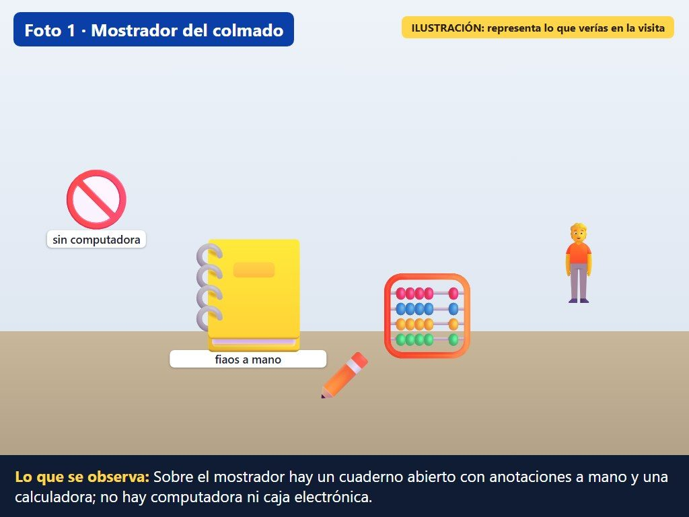
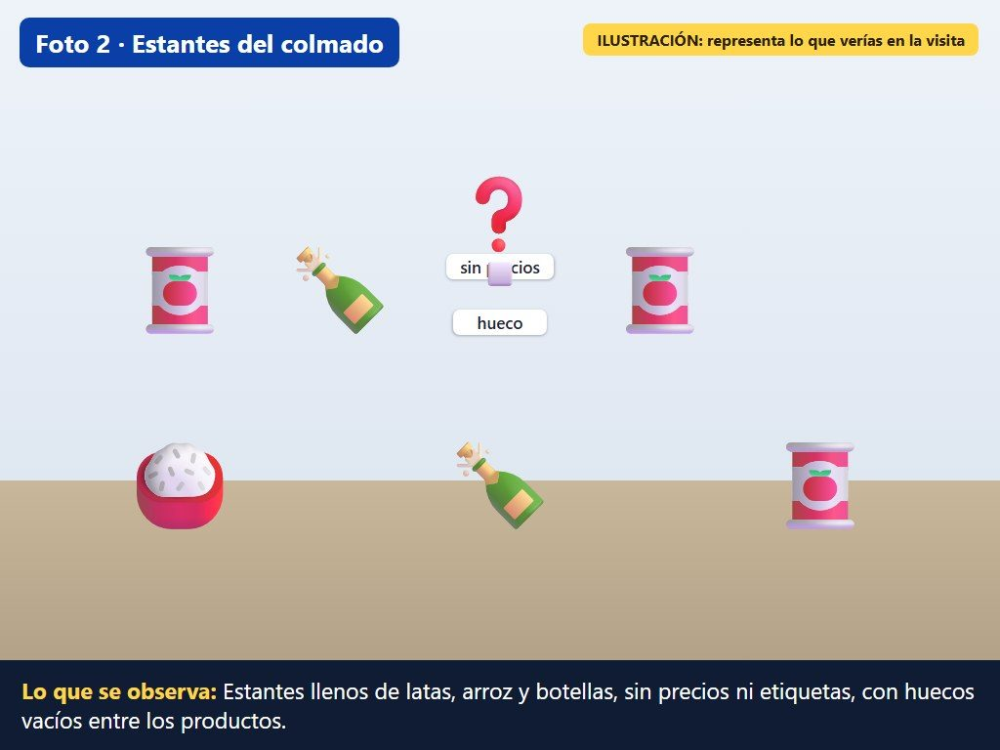
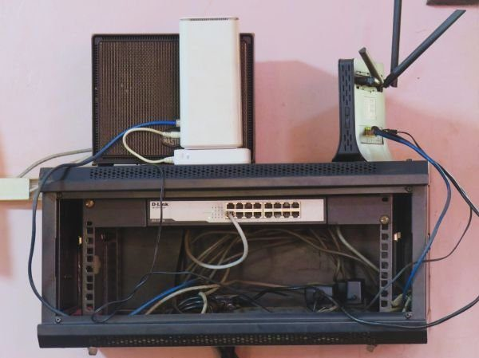
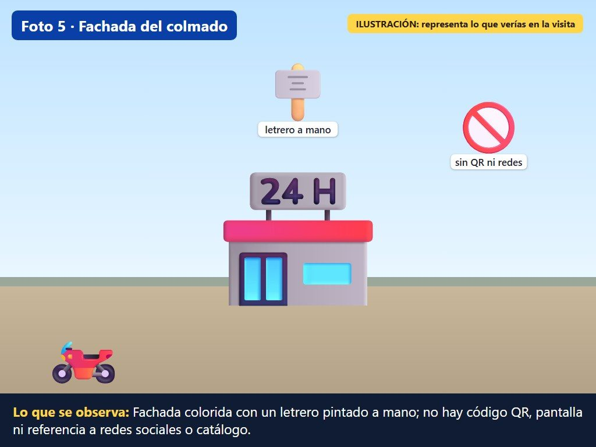

Caso 3: Colmado La Bendición
Tu misión
Eres el equipo de asesores de INFOTEP. Doña Altagracia Mejía te pidió ayuda con esta empresa. Tu meta: digitalizar el control de fiaos, inventario y la comunicación con clientes con herramientas gratuitas o de bajo costo.
- Observa: lee la entrevista y mira las fotos.
- Diagnostica: responde el diagnóstico en la plataforma.
- Planifica: revisa el plan de trabajo y avanza algunas actividades.
- Documenta: llena el kit de Excel y redacta el documento con el Redactor.
- Entrega: escribe el informe final y guarda tus archivos en la carpeta del equipo.
- Sector
- Comercio de alimentos al detalle
- Ubicación
- Los Alcarrizos
- Empleados
- 2 hombres y 2 mujeres
- Años en el mercado
- 15
- Persona de contacto
- Doña Altagracia Mejía, 58 años, propietaria
- Estrategia a implementar
- Transformación Digital en las MIPYMES
1. Entrevista con el dueño
«Mi hijo me dice que tengo que modernizarme, pero yo no sé por dónde empezar. Los fiaos los llevo en un cuaderno y a veces se me pierde la cuenta de quién debe. El inventario lo hago a ojo; cuando algo se acaba me entero porque el cliente lo pide. Pago a los suplidores en efectivo y por transferencia desde mi teléfono. No tengo respaldo de nada: si se daña el cuaderno, se pierde todo. No aparezco en Google Maps ni tengo catálogo; los clientes me escriben por mi WhatsApp personal. Cuando se daña el internet o el sistema, llamo a un primo que sabe de computadoras; no tengo a nadie fijo que me dé soporte.»
2. Recorrido por la empresa (fotos)

Foto 1 · Mostrador ilustración
Lo que se observa: Sobre el mostrador hay un cuaderno abierto con anotaciones a mano y una calculadora; no hay computadora ni caja electrónica.
Esta imagen ya está cargada en tu caso en la plataforma.

Foto 2 · Estantes de productos ilustración
Lo que se observa: Estantes llenos de latas, arroz y botellas, sin precios ni etiquetas, con huecos vacíos entre los productos.
Esta imagen ya está cargada en tu caso en la plataforma.

Foto 3 · Trastienda
Lo que se observa: Gabinete de red abierto en la pared con un router, un switch con un solo cable conectado y cables sueltos; no hay etiquetas.
Esta imagen ya está cargada en tu caso en la plataforma.
Foto 4 · Caja de cobro
Lo que se observa: Mostrador con un datáfono (terminal de tarjeta), un portalápices con bolígrafos y papeles.
Esta imagen ya está cargada en tu caso en la plataforma.

Foto 5 · Frente del local ilustración
Lo que se observa: Fachada colorida con un letrero pintado a mano; no hay código QR, pantalla ni referencia a redes sociales o catálogo.
Esta imagen ya está cargada en tu caso en la plataforma.
3. Tu trabajo en la plataforma
Tu caso ya está creado en tu cuenta de la plataforma, con la solicitud del servicio y estas fotos cargadas, con este nombre (el número de tu equipo está en tu hoja de usuarios). No crees otro:
Colmado La Bendición - Equipo N
Estrategia del caso: Transformación Digital en las MIPYMES.
Documento que debes redactar con el Redactor (✨ Niko): Informe de Madurez Digital de la Empresa.
Herramientas de la plataforma para este caso:
- Diagnóstico de transformación digital
- Fotos
- Encuesta de satisfacción (enlace público)
- Planner
- Kit de ahorro de tiempo
- Redactor con Niko: Informe de Madurez Digital de la Empresa
4. Carpeta de entregables (tu lista de cotejo)
Así lo harías en una asesoría real: al final entregas una carpeta con todo esto. Tu supervisora, que no estará en el aula, revisará después esta lista de cotejo: revisa tú mismo que no falte nada.
- ☐ Ficha de la empresa completa (la solicitud ya viene cargada)
- ☐ Objetivo del servicio definido
- ☐ Visita realizada con su ayuda memoria
- ☐ Hallazgo escrito y confirmado en cada foto del caso
- ☐ Diagnóstico completo (más del 70 % de los criterios respondidos)
- ☐ Plan de trabajo con responsables y fechas
- ☐ Avance registrado en el cronograma (al menos 2 actividades)
- ☐ Kit de medición en Excel trabajado y subido a Documentos
- ☐ Documento de implementación (Word hecho con el Redactor)
- ☐ Informe final con mejoras y recomendaciones
- ☐ Carpeta comprimida con portada, subida al Proyecto final (Unidad V) por una sola persona
5. ¿Quieres apoyarte en ChatGPT o Gemini?
Copiar la descripción del caso 3 para usarla con ChatGPT, Gemini u otra IA
Desarrollado por Johan Tapia, PhD